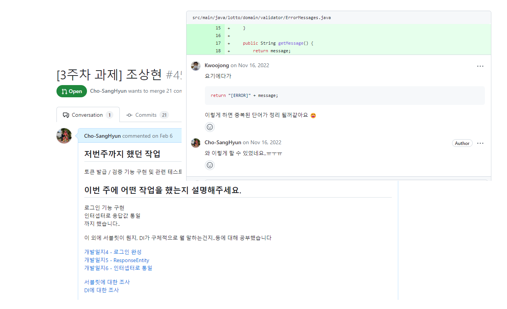

한 분야에 얽매이지 않고 다양한 분야의 경험을 쌓는 것을 지향합니다. 어떤 분야가 저랑 맞는지 모르기 때문에, 여러 분야를 접해보고 저랑 맞는 분야를 찾으려고 하고 있습니다. 또한 여러 분야의 경험을 쌓으면 그만큼 다룰 수 있는 것이 많아지므로, 어떤 문제가 닥쳤을 때 더욱 더 유연하게 대처할 수 있게 된다고 생각하고 있습니다.
"내가 원하는 모습으로 화면을 그릴 수 있네? 재밌다" 라는 생각으로 프론트분야, 그 중에서도 React & JavaScript를 공부했습니다.
프론트가 아닌 다른 분야도 접해보자는 생각으로 22년도 여름 교내 시스템 소프트웨어
연구실에서 진행한 "LevelDB 분석 스터디"에 참가했습니다.
Google에서 만든 key - value store인 LevelDB를 소스코드 수준(C++)에서 정적 / 동적으로 분석하고 문서를 작성해
전자책으로 출판했으며, 여러 option들을 튜닝하면서 그에 따른 성능 변화를 측정하고 논의하는 활동 등을 했습니다.
AI도 접해보자는 생각으로 교내 AI수업을 신청해 팀 프로젝트를 진행했습니다.
Class Activation Map, Transfer Learning, Fine Tuning을 활용해 CNN모델이 사람의 얼굴을
보고 감정을 분류하는 과정을 시각화해봤습니다.
엔드유저에게 보이지 않는 로직을 짜는 것에 흥미를 느껴 백엔드를 접하고자 우아한테크코스 프리코스 JAVA트랙에 참가했습니다. 클린코드, 피어리뷰 등 기존에는 생각치 못했던 것들을 접할 수 있었습니다. 최종 선발되진 않았으나, 백엔드도 계속해서 공부해보고 싶단 마음으로 Spring Boot를 공부해오고 있습니다.
